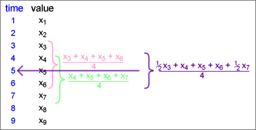

Moving average with odd and even run lengths
A moving average provides a smoothed value at the middle of the times of the values being averaged.
If averaging over an even number of values, the smoothed value is for a time between those of the data values, such as "year 2005.5".
A second stage of averaging for even run lengths
To provide smoothed values at the same times as the raw data, we often take a further 2-point moving average.

This is equivalent to giving half weight to the two outermost values. If based on moving averages of 4, this is called a 4-point centred moving average.
These centred averages are particularly useful when analysing seasonal data. For example, 12-point centred moving averages are often used for monthly data.